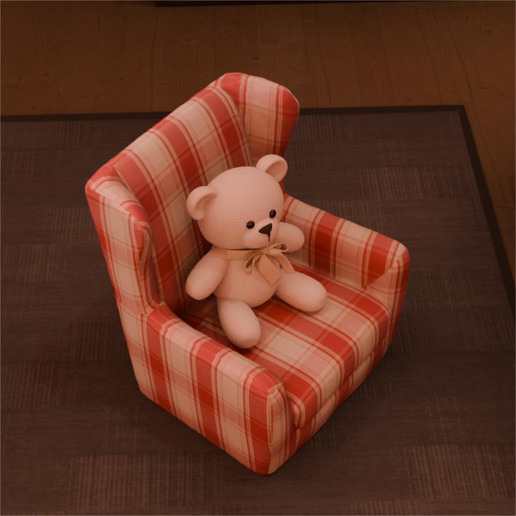

|
Liangchao Xu (许梁超) I am a senior student at the School Intelligent Software and Engineering at Nanjing University. I'm very fortunate to be advised by Prof. Yao Yao of 3D Vision Lab from School of Intelligence Science and Technology, Nanjing University. I’ m also working closely with Prof. Yuan Liu from HKUST. My research primarily centers on 3D reconstruction and 3D generation. |

|
ResearchMy research focuses on 3D vision, including 3D reconstruction and 3D generation. I aim to enable highly usable 3D interaction and controllable 3D content generation. |
|

|
GauUpate: New Object Insertion in 3D Gaussian Fields with Consistent Global Illumination
Chengwei Ren, Fan Zhang, Liangchao Xu Liang Pan, Ziwei Liu, Wenping Wang, Xiao-Ping Zhang, Yuan Liu Under Review, 2025 By introducing GauUpdate, we enable fast and consistent insertion of new objects into existing 3D Gaussian fields by relighting them with inverse rendering for appearance alignment across varying lighting conditions. |